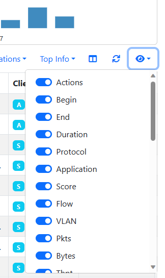
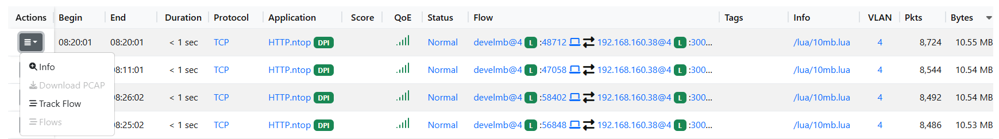
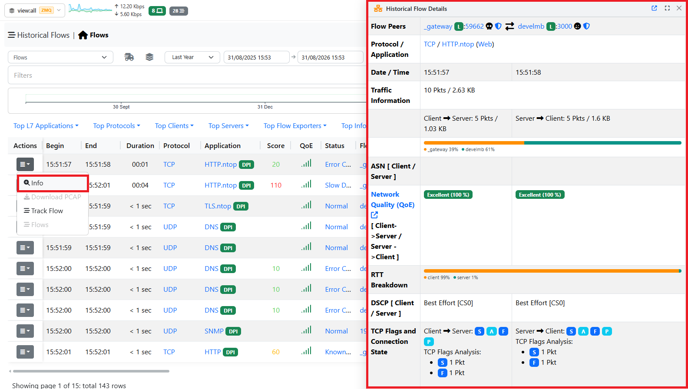
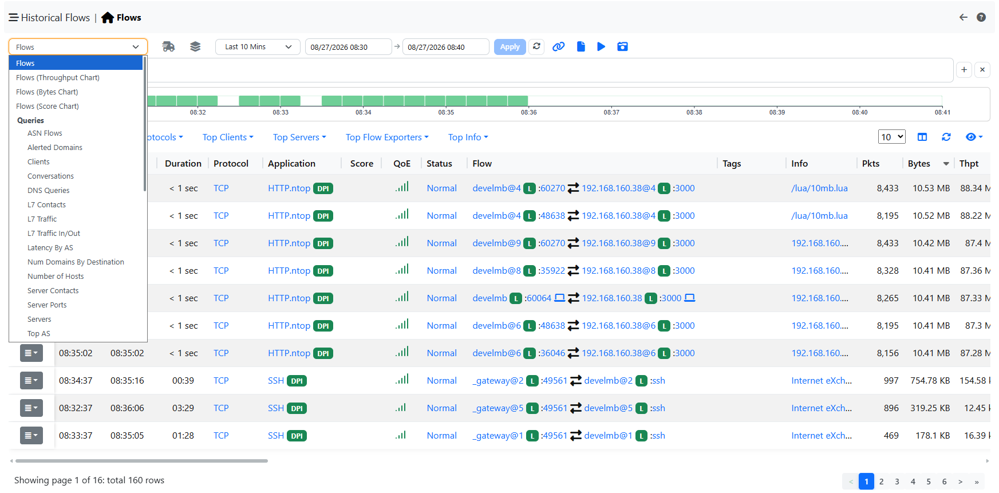
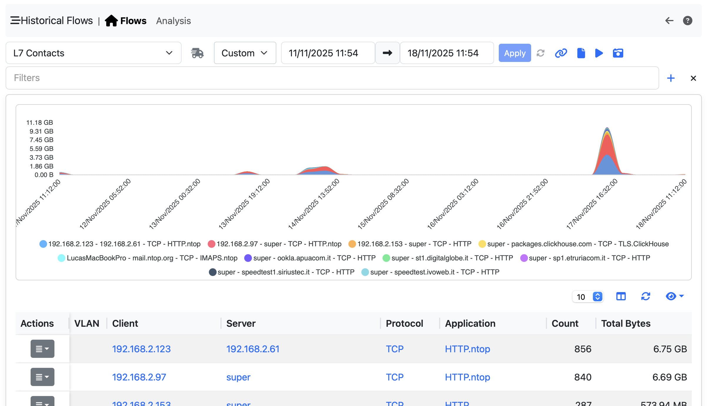
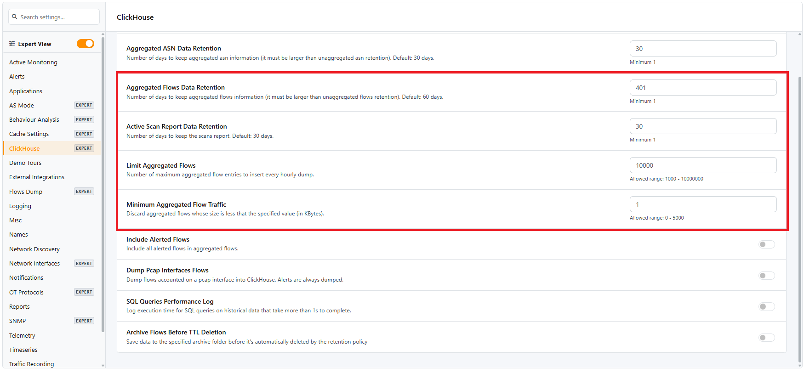

Исторический
Предупреждение
MySQL Flow Explorer устарел, и его поддержка прекращена в пользу ClickHouse (Сброс потока) исследователь потоков. Поддержка ClickHouse недоступна в Windows и встроенных архитектурах.
Когда ClickHouse включен, обозреватель исторических потоков становится доступен в сети ntopng GUI. Эта страница используется для навигации по потокам, которые видит и сохраняет ntopng.
Примечание
Поддержка ClickHouse, включая обозреватель исторических потоков, доступна только в версии ntopng Enterprise M или выше.
Проводник доступен на левой боковой панели в разделе «Потоки».

Обозреватель исторических потоков
Как и на странице оповещений, можно перемещаться по потокам, фильтруя результаты. Чтобы получить доступ к нескольким фильтрам, щелкните различные результаты (например, Хост разработка v5, чтобы расследовать его деятельность) или нажав кнопку + символ в правой верхней части GUI и выберите нужный фильтр.

Фильтрация
Перемещаться по времени можно, настраивая дату и время с помощью меню навигации или перетаскивая время с карты.

Меню навигации
Не все поля по умолчанию отображаются в записях, чтобы показать/скрыть их, нажмите кнопку глаз под диаграммой и выберите нужную информацию.

Показать/скрыть информацию о записях
Другие действия можно выполнить, нажав кнопку «Действие» (левая большая часть записей). Например, Информация действие перенаправляет пользователя на новую страницу с подробной информацией о потоке.

Пример потока
Доступ к историческим данным о потоках также можно получить из Исторические графики .

Подробности
При нажатии кнопки информации о потоке (внутри кнопки действия) его сведения открываются на боковой панели рядом. к столу; значок развертывания панели открывает их как полную страницу. В деталях показаны хозяева и порты (нажмите их, чтобы найти исторические потоки этого хоста, порта, приложения или AS), протокол, когда поток начался и закончился, его трафик в каждом направлении, качество сети, задержки, флаги TCP, проблемы с их оценкой, MITRE ATT&CK руководство по технике и устранению, а также информацию протокол приложения (DNS, HTTP, TLS, ICMP…).
Потоки промышленных протоколов (Modbus, S7Comm, Profinet: Enterprise L), потоки с BGP информацией и, когда включены временные ряды с высоким разрешением, диаграммы потока имеют свои собственные вкладки рядом с Обзор. Вкладка промышленного протокола отображается серым цветом, если поток был сохранен без его подробности: наведите на него указатель мыши, чтобы понять, почему.

Подробности исторических потоков
в случае, если Wazuh включен и настроен (см. Wazuh Интеграция для более подробной информации), рядом с хостами, которые добавит возможность перехода к оповещениям wazuh, отфильтрованным для указанного хоста в том же временном интервале потока.

Подробности исторических потоков Wazuh Интеграция
Примечание
Ссылка Wazuh активна только для локальных хостов.
Отслеживание потоков
Поскольку долгоживущие потоки периодически сбрасываются в базу данных частями (максимум каждые 15 минут), одиночный поток продолжительностью, например, один час будут отображаться как несколько отдельных записей в представлении «Исторические потоки». Нажмите кнопку Отслеживание потоков кнопка для группировки всех записей, имеющих одно и то же 5-кортежный, реконструирующий полный поток на всем его протяжении.

Кнопка «Отслеживать потоки» в представлении «Исторические потоки»
Включение дампа потока
ntopng может сбрасывать данные потоков в постоянное хранилище и обеспечивает просмотр для просмотра. записанные данные о потоках в прошлом. Проверьте ClickHouse для более подробной информации о как настроить соединение и исторические представления, доступные для этого режима.
Для сброса потоков на диск ntopng требуется -Ф clickhouse вариант быть указано, как описано в ClickHouse.
Пользовательские запросы
Чтобы проанализировать исторические потоки, сбрасываемые ntopng на ClickHouse, можно использовать дополнительные представления потоков с пользовательскими запросами, которые могут агрегировать данные в соответствии с некоторыми критериями или манипулировать данными любым способом, разрешенным SQL.
Представление потоков по умолчанию в обозревателе исторических потоков — «Потоки». который показывает полный список необработанных потоков.

Помимо необработанных «Потоков», доступны дополнительные встроенные представления, которые построен на основе механизма пользовательских запросов. Вот обзор текущего момента доступные представления потоков:
Потоки (диаграмма байтов): отображает представление потоков с диаграммой байтов.
Потоки (диаграмма оценок): отображает представление потоков с диаграммой оценок.
Предупрежденные домены: показывает количество оповещенных доменов.
Клиенты: отображает основные хосты как потоковые клиенты и их трафик.
Разговоры: показывает самые популярные разговоры <клиент, сервер> с наибольшим количеством потоков и общим трафиком.
L7 Контакты: L7 Контакты: отображает верхние пары <клиент, сервер, L7 протокол> и их общий трафик.
Задержка по AS: отображает среднюю задержку автономных систем источника и назначения.
Количество хостов: показывает количество IPv4 клиентов, IPv4 серверов, IPv6 клиентов и IPv6 серверов.
Контакты сервера: отображает серверы, упорядоченные по количеству подключений.
Порты сервера: показывает количество использованных портов назначения.
Серверы: отображает основные хосты как серверы потока и их трафик.
Контакты с наиболее популярными клиентами: показывает клиентов, которые обращаются к наибольшему количеству различных серверов.
Серверы, с которыми чаще всего обращаются: отображаются серверы, к которым обращается наибольшее количество различных клиентов.
Топ местных говорящих: отображает лучших локальных хостов с наибольшим трафиком.
Top Receiver AS: отображает лучшие автономные системы с наибольшим количеством полученного трафика.
Страны с наибольшим количеством получателей: отображаются страны с наибольшим количеством полученного трафика.
Сети с наибольшим количеством получателей: отображает сети с наибольшим количеством полученного трафика.
Топ удаленных пунктов назначения: отображает наиболее удаленные пункты назначения с наибольшим трафиком.
AS Top Sender: отображает лучшие автономные системы с наибольшим количеством отправленного трафика.
Страны с наибольшим количеством отправителей: отображаются страны с наибольшим количеством отправляемого трафика.
Сети с наибольшим количеством отправителей: отображает сети с наибольшим количеством отправляемого трафика.
Посещаемые сайты: показывает наиболее посещаемые домены.
Основное состояние соединения: отображается TCP Основное состояние соединения (ПЫТКА, УСТАНОВЛЕНО, ЗАКРЫТО).
Второстепенное состояние соединения: отображается TCP. Состояние основного и второстепенного соединения

Вверх L7 Таблица контактов
Вышеуказанные встроенные пользовательские запросы могут быть расширены пользователем путем создания простые файлы JSON, содержащие описание запроса. Определения запросов, соответствующие к указанным выше встроенным запросам доступны в файловой системе как файлы JSON в разделе /usr/share/ntopng/scripts/historical/tables/*.json. Добавить новое представление потока так же просто, как поместить еще один файл JSON в ту же папку.
Вот пример файла JSON для представления потока клиентов.
{
"name" : "Clients",
"i18n_name" : "clients",
"data_source" : "flows",
"show_in_page" : "overview",
"hourly": true,
"visualization_type" : "table",
"select" : {
"items" : [
{
"name" : "VLAN_ID"
},
{
"name" : "IPV4_SRC_ADDR"
},
{
"name" : "IPV6_SRC_ADDR"
},
{
"name" : "SRC_LABEL"
},
{
"name" : "SRC_COUNTRY_CODE"
},
{
"name" : "total_bytes",
"func" : "SUM",
"param" : "TOTAL_BYTES",
"value_type" : "bytes"
}
]
},
"filters" : {
"items" : [
{
"name": "PROBE_IP"
},
{
"name": "INPUT_SNMP"
},
{
"name": "OUTPUT_SNMP"
}
]
},
"groupby" : {
"items" : [
{
"name" : "VLAN_ID"
},
{
"name" : "IPV4_SRC_ADDR"
},
{
"name" : "IPV6_SRC_ADDR"
},
{
"name" : "SRC_LABEL"
},
{
"name" : "SRC_COUNTRY_CODE"
}
]
},
"sortby" : {
"items" : [
{
"name" : "total_bytes",
"order" : "DESC"
}
]
}
}
Формат JSON говорит сам за себя. Можно определить столбцы, которые будут отображаться под деревом выбора, столбцы, к которым применяется группировка в дереве группировки, и столбец по умолчанию, к которому применяется сортировка применяется под деревом сортировки. Также можно определить функции агрегирования, например элемент «сумма» в примере. Для более сложных примеров рекомендуется просмотреть встроенные определения запросов, доступные в тех же папках.
Полный список столбцов доступен в схеме базы данных, расположенной по адресу /usr/share/ntopng/httpdocs/misc/db_schema_clickhouse.sql.
Экспорт потоков
Нажав на значок, можно загрузить копию необработанные потоки в формате CSV. Вот те же данные, что и на картинке выше в Формат CSV:
L7_PROTO|IP_DST_PORT|FLOW_TIME|BYTES|FIRST_SEEN|LAST_SEEN|IP_SRC_PORT|NTOPNG_INSTANCE_NAME|IP_PROTOCOL_VERSION|IPV4_SRC_ADDR|JSON|PACKETS|IPV4_DST_ADDR|INTERFACE_ID|PROFILE|INFO|IPV6_DST_ADDR|VLAN_ID|PROTOCOL|IPV6_SRC_ADDR
143|443|1544712866|18262|1544712646|1544712866|32886|PC local|4|192.168.1.6||53|17.248.146.148|1|ssl|feedbackws.icloud.com|::|0|6|::
143|443|1544712876|13958|1544712749|1544712876|34078|PC local|4|192.168.1.6||46|17.248.146.148|1|ssl|p66-iwmb0.icloud.com|::|0|6|::
143|443|1544718548|203978|1544718247|1544718548|38928|PC local|4|192.168.1.6||431|17.248.146.148|1|ssl|p66-ckdatabasews.icloud.com|::|0|6|::
143|443|1544718821|175770|1544718548|1544718821|38928|PC local|4|192.168.1.6||370|17.248.146.148|1|ssl|p66-ckdatabasews.icloud.com|::|0|6|::
143|443|1544723738|14663|1544723557|1544723738|49328|PC local|4|192.168.1.6||45|17.248.146.148|1|ssl|p66-pushws.icloud.com|::|0|6|::
Хранение данных
Сохранение дампа потоков на диске можно настроить из Хранение данных настройка предпочтений, в днях и, опционально, максимум дисковое пространство в GB (см. Потоки/Оповещения Максимальное дисковое пространство). Когда место на диске лимит достигнут, самые старые дни потоков и оповещений удаляются.
Почасовые исторические потоки
Примечание
Представление «Почасовые исторические потоки» доступно только для ntopng Enterprise XL.
Включение флага «Почасово» в обозревателе исторических потоков в ntopng отображает агрегированное представление исторических потоков.

Обозреватель почасовых исторических потоков
Исторические потоки агрегируются по нескольким полям, в том числе:
Начинать (Начало эпохи потоков)
Конец (Конец эпохи потоков)
Протокол (Протокол L4)
Приложение (L7 Протокол)
Поток (IP-адрес клиента — порт клиента — IP-адрес сервера — порт сервера)
Средний балл (Средний балл агрегированных необработанных потоков)
Общие потоки (Общее количество агрегированных потоков в одной записи)
Пкц (общее количество пакетов в агрегированных потоках в одной записи)
Всего байт (Сумма трафика TX и RX объединенных потоков в одной записи)
Клиент АСН (номер автономной системы, присвоенный клиенту)
Сервер АСН (Номер автономной системы, присвоенный серверу)
Риск потока (Уровень риска, связанного с потоком)
Экспортер потока (Система или инструмент экспорта данных о расходе)
Клиентская сеть (Сеть, связанная с клиентом)
Серверная сеть (Сеть, связанная с сервером)
В SNMP iface (Интерфейс ввода SNMP)
Выход SNMP iface (Выходной интерфейс SNMP)
Страна клиента (Страна, связанная с клиентом)
Страна сервера (Страна, связанная с сервером)
MAC-адрес клиента (MAC-адрес клиента)
MAC-адрес сервера (MAC-адрес сервера)
ntopng Имя экземпляра
С помощью почасовых исторических потоков можно лучше анализировать прошлый трафик, предоставляя сводку исторических потоков.
Нажатие на запись «Потоки» в меню «Действия» для конкретной записи почасового исторического потока позволяет пользователю вернуться к историческим потокам, отфильтрованным по IP-адресу клиента, IP-адресу сервера, порту сервера, экспортеру потока и имени экземпляра ntopng.

Почасовые исторические потоки — кнопка «Потоки»
Здесь отображаются потоки, составляющие одну запись почасовых исторических потоков.
В обозревателе почасовых исторических потоков присутствует множество «топ-фильтров», в том числе:
Топ приложений (L7 Протоколы с наибольшим трафиком)
Лучшие протоколы (Протоколы L4 с наибольшим количеством трафика)
Лучшие клиенты (Клиенты с наибольшим трафиком)
Топ серверов (Серверы с наибольшим трафиком)
Лучшие хосты (Хосты с наибольшим трафиком)
Настройки агрегирования
На странице настроек, на вкладке ClickHouse, можно изменить настройки агрегации почасовых потоков.

Настройки почасовых исторических потоков
ClickHouse Хранение данных агрегированных потоков: количество дней для хранения агрегированной информации о потоках (должно быть больше, чем период хранения для неагрегированных потоков); значение по умолчанию — 60 дней.
ClickHouse Ограничить агрегированные потоки: Максимальное количество записей агрегированного потока для вставки в каждый почасовой дамп.
ClickHouse Минимальный совокупный поток трафика: Отбросить агрегированные потоки размером меньше указанного значения (в килобайтах).
Включить потоки с оповещениями: включить все потоки с оповещениями в агрегированные потоки.
Воспроизведение исторических потоков
Хотя Historical Flow Explorer обеспечивает большую гибкость для анализа исторических потоков (посредством возможностей фильтрации, отчетов, страниц графического анализа, пользовательских запросов), он не предоставляет всех функций анализа, доступных для реального трафика. Чтобы преодолеть эту проблему, в ntopng 6.2 (и более поздних версиях) была введена функция воспроизведения исторических потоков, позволяющая восстанавливать и анализировать исторические потоки в виртуальном «живом» ntopng интерфейсе.
Чтобы воспроизвести исторические потоки, перейдите в «Обозреватель исторических потоков», выберите временной интервал (и, при необходимости, некоторые фильтры), нажмите кнопку «Воспроизвести» (воспроизвести) на панели инструментов и подтвердите выбор, нажав Анализировать. Только администраторы могут воспроизводить исторические потоки.

Кнопка воспроизведения исторических потоков
Это создаст новый База данных «живой» интерфейс, похожий на любой другой физический интерфейс в ntopng, и открыть его живые потоки. Обратите внимание:
Обработка записей может занять некоторое время, в зависимости от количества записей, выбранных из базы данных. Значок «Загрузка» отображается вверху страницы до завершения обработки записей.
Поскольку трафик анализируется как действующий трафик, существует максимальное количество активных потоков и хостов, которые могут быть сохранены в памяти и, таким образом, обработаны. Это зависит от настроенного потока и размера кэша хоста (применяется то же ограничение для физических интерфейсов).

Просмотр исторических потоков в реальном времени
Архив исторических потоков для обеспечения соответствия
Чтобы соответствовать нормативным требованиям, таким как GDPR, SOX, HIPAA и PCI DSS, сетевые данные часто необходимо хранить в течение длительных периодов времени. ntopng поддерживает экспорт данных потока из ClickHouse до их удаления благодаря механизму TTL (время жизни), что позволяет обеспечить совместимое долгосрочное архивирование на внешних системах хранения.
В этом документе описывается, как включить экспорт данных о потоке, настроить его и повторно импортировать архивные данные в ClickHouse, когда это необходимо.
Преимущества
Соответствие нормативным требованиям: Соблюдение требований к долгосрочному хранению данных.
Оптимизация хранилища: Предотвратите нехватку локального хранилища, экспортируя данные перед удалением TTL.
Аудиторский след: Ведение исторических записей для судебно-медицинской экспертизы или анализа соответствия.
Восстановление данных: Повторно импортируйте данные о расходе, необходимые для расследования.
Включение экспорта потока
Выполните следующие шаги, чтобы включить экспорт данных о расходе в веб-интерфейсе ntopng:
Войдите в веб-интерфейс ntopng.
Из Левая боковая панель, перейдите: Настройки → Настройки → ClickHouse.
Найдите параметр экспорта (например, «Экспорт удаленных потоков в файл»).
Включите эту опцию, включив ее.
После включения ntopng будет автоматически экспортировать записи потока, прежде чем они будут удалены механизмом TTL. Экспорт происходит ежедневно в полночь.
Местоположение экспорта по умолчанию
Путь: /var/lib/ntopng
Формат файла: Собственный формат ClickHouse
Частота файлов: Один файл в день
Каждый экспортированный файл содержит все данные о потоке, срок жизни которых запланирован на этот день, и которые будут удалены.
Пользовательский каталог экспорта
Чтобы изменить каталог экспорта:
Отредактируйте файл конфигурации ntopng или используйте аргумент командной строки: –db-archive-dir|6 <custom_path>
Заменять <пользовательский_путь> с желаемым местом экспорта.
Импорт архивных данных о расходе
Вы можете восстановить экспортированные данные о расходе до ClickHouse для анализа:
Предпосылки:
Машина с clickhouse-клиент установлен.
Команда:
`bash
clickhouse-client --query="INSERT INTO ntopng.flows FORMAT Native" < /path/to/exported_file
`
Шаги:
Скопируйте нужный заархивированный файл в систему с доступом к ClickHouse.
Запустите команду clickhouse-client, как показано выше.
Убедитесь, что данные были успешно импортированы.
Просмотр импортированных данных в ntopng
После импорта данных они становятся видимыми в пользовательском интерфейсе ntopng:
Перейти к:
Потоки → Исторический и выберите временной диапазон, соответствующий импортированным вами данным.
Важные примечания
Временные метки: каждый файл содержит данные ровно за один день с временными метками в формате UTC. Например, данные от X 00:00:00 UTC до X+1 дня находятся в одном файле.
Хранение. На импортированные данные распространяются те же правила TTL. Если данные уже старше настроенного окна TTL, они будут удалены в следующий полуночный цикл.
Время импорта. Обязательно тщательно планируйте импорт, чтобы не потерять данные сразу после восстановления.